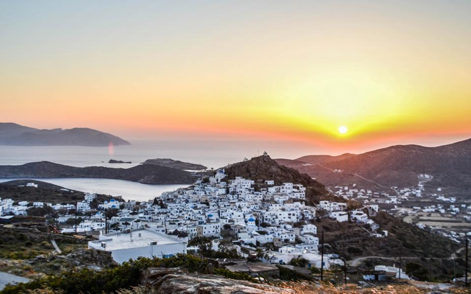

| ΚΕΝΤΡΙΚΗ ΣΕΛΙΔΑ |
Η Ίος είναι ένα κυκλαδίτικο νησί του Αιγαίου Πελάγους. Ονομάζεται και «Νιός» από τους ντόπιους οι οποίοι αντίστοιχα ονομάζονται «Νιώτες».
Στη σελίδα αυτή θα μάθετε πληροφορίες για:
Η επιφάνεια της Ίου εκτιμάται στα 108,713 τ.χλμ., ενώ έχει μήκος ακτών 87 χιλιόμετρα. Βρίσκεται ανάμεσα στη Νάξο, τη Σίκινο και τη Θήρα. Οι σημαντικότεροι όρμοι του νησιού είναι ο Γιαλός, ο Μυλοπότας και το Μαγγανάρι. Η Ίος απέχει 111 ν.μ. από το λιμάνι του Πειραιά, 72 ν.μ. από το Ηράκλειο και 55 ν.μ. από το λιμάνι της Ερμούπολης, της διοικητικής έδρας του νομού Κυκλαδων.
Η Ίος, έχει εξελιχθεί σε ένα τουριστικό θέρετρο με διεθνή φήμη. Κάθε χρόνο την επισκέπτονται χιλιάδες ταξιδιώτες από κάθε γωνιά της γης για να περάσουν τις ωραιότερες διακοπές τους στο ειδυλλιακό νησί των Κυκλάδων. Οι κυρίως οικισμοί του νησιού είναι το Μαγγανάρι, ο Μυλοπότας, η Χώρα και τα Τσουκαλαριά όπου βρίσκεται το πετρομαρμαρόκτιστο θέατρο «Οδυσσέας Ελύτης» με καταπληκτική θέα στον κόλπο του Μυλοπότα. Πέρα από τις φυσικές ομορφιές της, το νησί της Ίου είναι κυρίως γνωστό για την έντονη νυχτερινή ζωή και την ατέλειωτη διασκέδαση που προσφέρει στους επισκέπτες του. Τα πλοία που φτάνουν στο νησί, καλοσορίζει το ξακουστό για την ασφάλεια λόγω μορφολογίας, λιμάνι της Ίου ή αλλιώς Γιαλός.
Η πιο πολυσύχναστη παραλία του νησιού είναι ο Μυλοπότας, ο οποίος βρίσκεται σε πολύ κοντινή απόσταση από την Χώρα, ενώ άλλες ωραίες παραλίες είναι το Μαγγανάρι, ο Γιαλός, το Κολιτσάνι,η Κουμπάρα,ο Κάλαμος, το Σαπουνόχωμα, η παραλία του Παπά, η παραλία της Ψάθης και η Αγία Θεοδότη. Επίσης υπάρχουν πολλές μικρότερες παραλίες, η πρόσβαση των οποίων είναι αρκετά δύσκολη. Ο επισκέπτης του νησιού μπορεί να κάνει θαλάσσια σπορ. Windsurfing, wake-boarding, τζετ - σκι, καταδύσεις, ακόμα και kitesurfing είναι κάποια από αυτά. Στο Μυλοπότα και το Μαγγανάρι αλλά και στο Λιμάνι, λειτουργούν οργανωμένες επιχειρήσεις τέτοιου είδους.
| ΓΝΩΣΤΕΣ ΠΑΡΑΛΙΕΣ |
| Μυλοπότα |
| Κουμπάρα |
| Καλάμου |
| Παπά |
| Καμπάκι |
| Πεταλίδι |
Η φήμη της ξεπερνάει τα λόγια: η Ίος σάς προσκαλεί στις παραλίες και τα σοκάκια της Χώρας της, για να διασκεδάσετε στο πιο κεφάτο καλοκαιρινό πάρτι των Κυκλάδων. Μουσική στη διαπασών, χαρούμενες φωνές, όλου του κόσμου οι γλώσσες, χορός, ιδρωμένα κορμιά, σφηνάκια... Κι όλοι γίνονται μια παρέα μέχρι το πρωί. Το άλλο πρόσωπο της Χώρας; Πέρα από τα μπαρ, θα βρείτε κυκλαδίτικα σπίτια, στοές, καφέ, παιδιά στις πλατείες, ασπρισμένα σκαλιά, καλόγουστα μαγαζάκια, εστιατόρια με διεθνή κουζίνα και την Παναγία Γκρεμιώτισσα να επιβλέπει και να προστατεύει. Η Ίος είναι οι διακοπές κεφιού που ονειρευόσασταν το χειμώνα. Ένα ελληνικό νησί, όπου η ξέφρενη διασκέδαση παίρνει σάρκα και οστά. Αλλά είναι και κάτι άλλο πιο βαθύ: η ομορφιά του πρωινού...με φόντο το Αιγαίο... μετά το πάρτι.
Για περισσότερες πληροφορίες σχετικά με:
1) Τις παραλίες της Ίου Πατήστε εδώ.
2) Αξιοθέατα της Ίου Πατήστε εδώ.
3) Καταλύμματα της Ίου Πατήστε εδώ.